About
| Title: | Visualization Poject 2 - Google Play Store Apps Analysis |
| Team Members: | Arunodhaya Reddy Chityala, Balaji Rao Solanki, Sai Kiran Butti, Tejaswini Parlapalli. |
| Advisor: | Dr. Khairi Reda |
Introduction
Android is one of the major operating systems in the market with billions of user base. To ease users'
everyday activities there exists many apps in the Google Play store as their primary download resource.
With the increase in the number of applications available in the play store, there exists some confusion
among users. Our primary goal of the project is to create visualizations that help the users select
appropriate apps based on their requirements and also to help manufacturers understand the trends of app
usage based on factors like app category, reviews, price, ratings, and installs. We made interactive
visualizations for each of the above elements which can be filtered by the users and have added various
charts to understand the choice of customers on their selections.
Dataset Description
Google Play store and app store have millions of downloads every day and to help users identify the apps
they are looking for among the thousands of apps present, we wanted to develop a Power Bi visualization
that details and presents various options giving the user a chance to filter in the apps as per their
requirements. Our dataset consists of data in CSV format which includes a CSV file of 9660 unique app
values with details of the category they belong to, ratings, reviews, size, installs, prizes, and genres
of the apps. Our dataset consists of about 9.0 MB with various values needed to implement the
visualizations and has been extracted from Kaggle.
Dashboard Design
Initial Design
Our plan was to make easily understandable and effective visualizations. So we initially thought of
adding all the visualizations in a singular box format without the need to shift to other pages to
have ease of access. Once we were clear on the types of charts to add we thought of adding filters
to the side as in the below picture. We then came across a few blockers as we needed additional
pages and adding side-by-side filters became a challenge.

Final Design

Next, In the final layout, we added scorecards of the data along with the dropdown filter based on
Release Day, month, and year to help visualize and understand the patterns of users. In the left top
layout, the heat map is replaced with a tree map, the Bar chart is changed to a vertical bar chart.
A World map is also added to display information about the number of applications owned by each
country.
Questions
1. Does the number of updates for apps in the play store have any effect on the number of downloads?
We built a line graph to check the variations in the number of updates being added to the play store and
their impact on the downloads made by users. Interestingly we noticed that the number of updates being
released does not have any effect on the number of downloads.
One possible explanation for this could be, that the users aren’t aware of a new version release or are happy with the existing version or that the majority of the updates/version changes being made might not be huge changes to demand the installation of an additional download.
One possible explanation for this could be, that the users aren’t aware of a new version release or are happy with the existing version or that the majority of the updates/version changes being made might not be huge changes to demand the installation of an additional download.
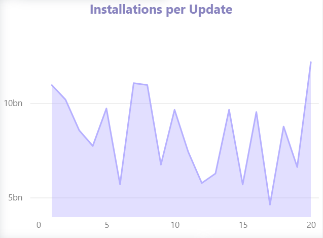
2. Does paid apps have more user ratings than unpaid one? And if so, which apps have been most used in paid and unpaid categories?
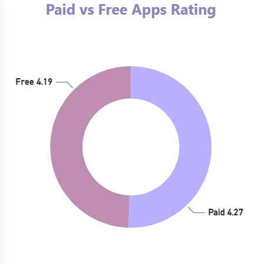
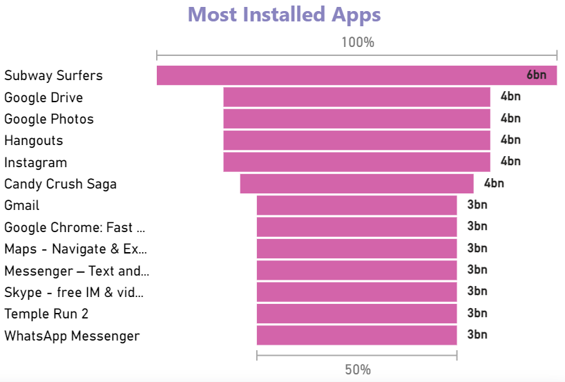
To answer this question, we built two charts a donut chart to toggle between paid vs app ratings and a
funnel chart to understand which app has mostly been used. We found that he paid and unpaid apps have
almost similar user ratings, but when it comes to use, the unpaid apps are far more installed when
compared to the paid ones.
3. Usually, apps are chosen based on their ratings and downloads. Can we visualize the relation between ratings and downloads in the dataset? Additionally, Which categories of apps have the most number of downloads and also have a good rating?
We created a bar chart to display the top most downloaded categories of apps, which when combined
with the rating filter created , we can filter out the rating we are looking for and find the top
category apps. from the above visual ,Gaming and Communication are the most downloaded categories of
apps which also have a good rating of above 4.0.
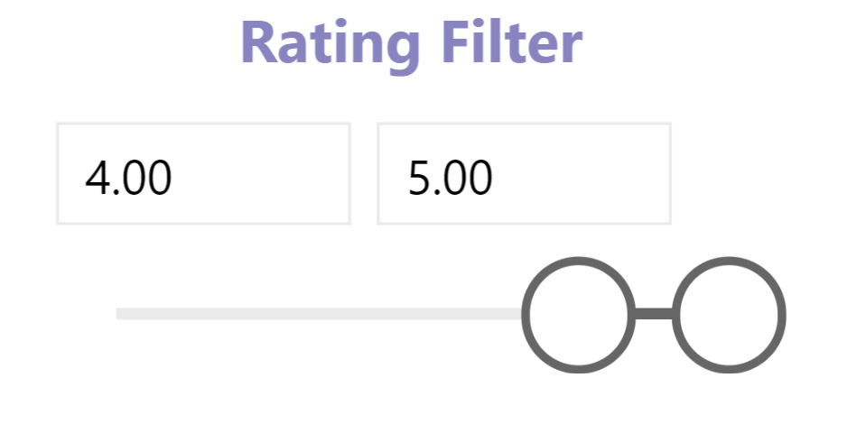
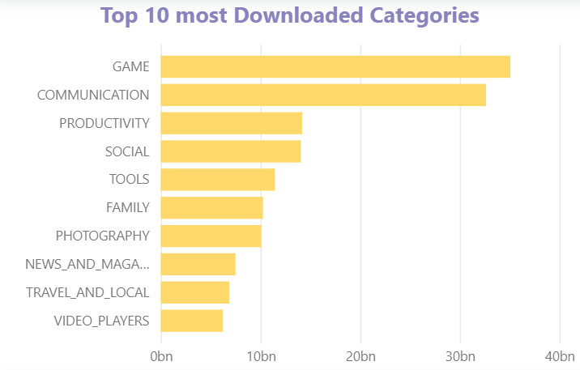
4. Youngsters are major consumers of new applications.is this statement true?If not, Which age group, the app is targeted at, has a higher number of user downloads/installs recorded?
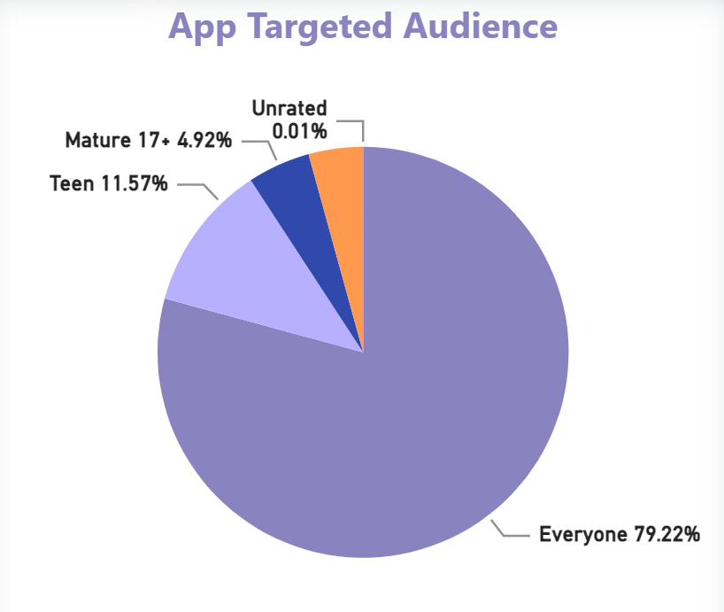
We added a pie chart to visualize the data of the targeted audience. Interestingly we found that the
developers mainly focused on developing apps that can be used by everyone. Followed by apps created for
teenagers. which means that although it is assumed that youngsters are the majority consumers, they
aren’t the only age group of people targeted for app development.
5. As a follow-up to the previous question 4, for the apps being targeted at age groups above 17, which were being mostly downloaded and are also receiving good ratings by the age groups above 17?
To answer this question, we made a pie chart, a funnel chart and utilized the rating filter created,
by selecting the target audience in the pie chart as 17+ and adding a rating filter we were able to
check for the most downloaded app in the view in the funnel chart. It was noticed that for the year
the data was collected Twitter was the app that was targeted at adults above 17+ and was also given
a good rating by them.
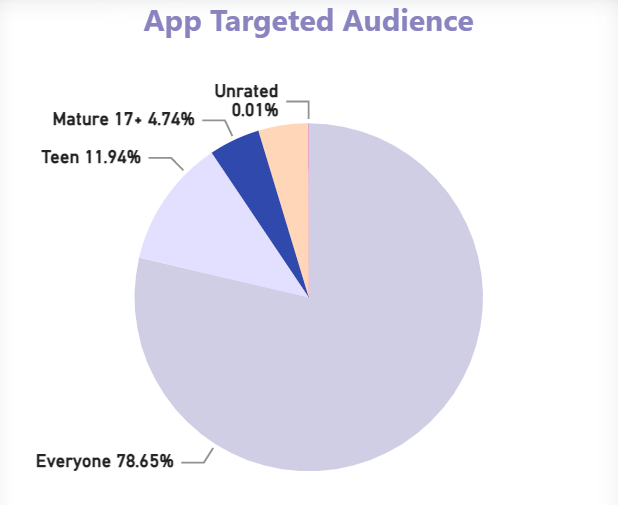
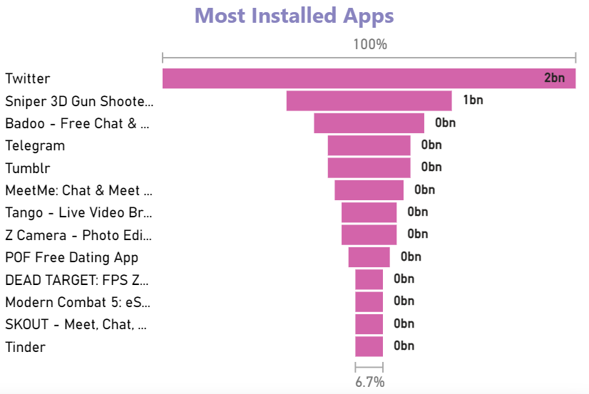
6. Does geography influence the distribution/usage of apps , and if they do what are the top categories and top apps in a country being installed /downloaded by the various age groups of users?
Visualizations in the bar chart, pie chart and funnel chart can be viewed to answer this question. When
filtered by the geo map added to answer the question, we found that the technologically advanced countries
had varying preferences based on their consumer utilization of apps. For example age categories (18+) in
United states have mostly downloaded subway servers.
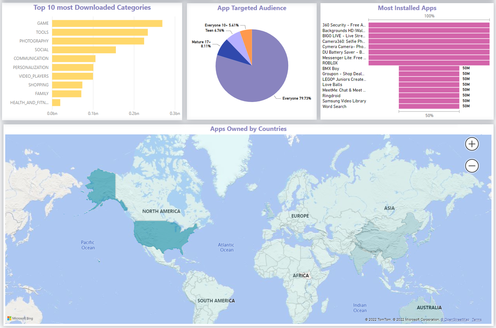
7. How can users select based on multiple factors? For example, a users wants to select the top downloaded free apps in the Game category having a rating of more than 4 in India.How can he do that?
Here we have used multiple filters from multiple visualizations. To do this we select the required
section from each visualization using the ctrl button. After selecting all the required sections, we can
see the results in the topmost apps visual. By varying the rating and payment filter, we select the
gaming category and county of choice in the map with a control button and we get the most installed app
in the funnel chart as subway surfers.
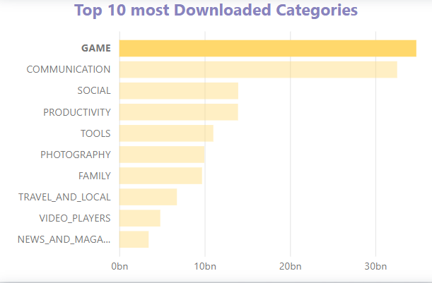
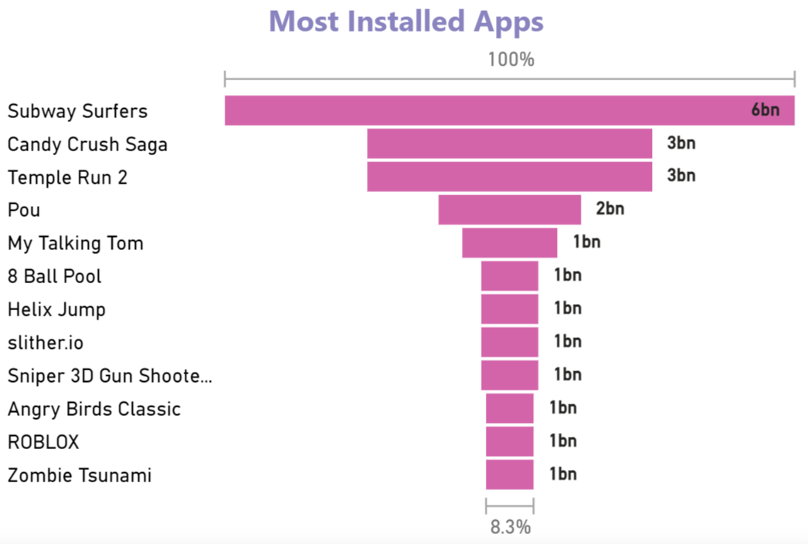
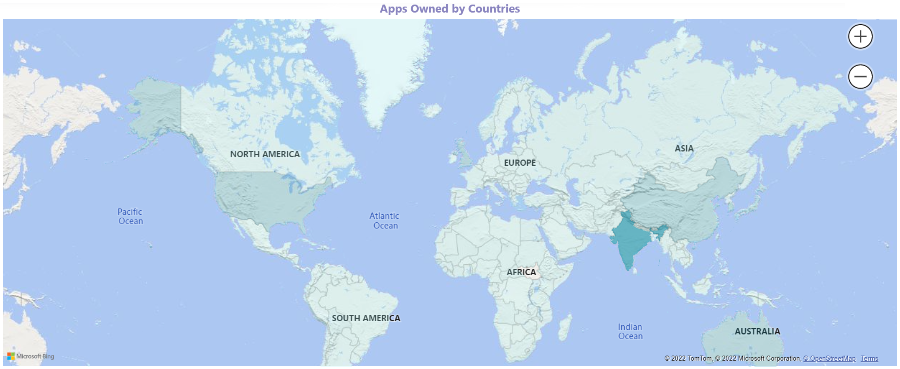
8. As a follow-up on answering individual choice questions with multiple filters, What is the average user rating for the paid apps in the social category released in 2017?
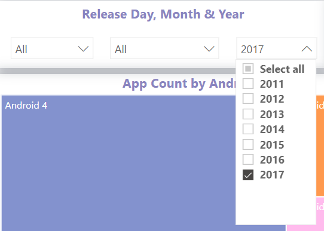
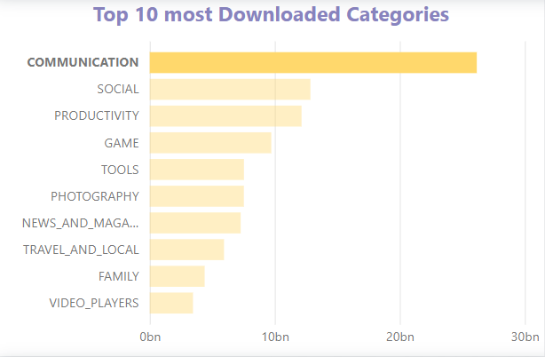
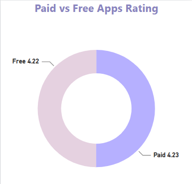
To answer this question, we can select the paid category in the donut chart, social as a category in the most downloaded app category, and the release time, we choose the time in which the app was released. The average rating appearing on the scorecards can be found to be 4.23.
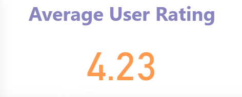
Insights From Visualization
From the visualizations created, we are able to conclude the below observations:
- From the first chart, the Majority of the updates belonged to gaming apps, which made sense as new features would be released as a new version update for this genre.
- With the release of a new version, the installations vary unevenly, based on the performance of the updates.
- From the donut chart, we were able to decipher the most paid apps belonged to the family genre, for example, people preferred to buy family games to play together.
- From the categories bar chart and target audience pie chart we can observe that gaming apps as expected have mostly targeted teenagers and youngsters.
- For each installation, we were also able to note the total number of installations, user ratings, and app counts with the help of scorecards.
Takeaways From Class
With the help of the project and course, we were able to understand how to visualize the data
effectively and make necessary analyses from it. We were able to perform data cleaning and data
aggregations for visuals while choosing colors and designs that would elevate the insights we wished to
share, without deviating from the data itself. Additionally, we were able to reduce unnecessary junk
additions and make concise charts for the visuals.
Team Members Contribution
Arunodhaya Reddy Chityala
- Worked on data set collection and cleaning.
- Worked on the target audience and paid vs free rating charts.
- Answered the questions related to the above charts in the documentation.
Balaji Rao Solanki
- Worked on installations per update chart.
- Added filters for genres, time, and rating.
- Embedded the Power BI code in the HTML application.
- Worked on consolidating all charts and documentation.
Sai Kiran Butti
- Worked on App count by Abdroid version chart.
- Worked on Scorecards for total installations chart.
- Worked on average user rating, total app counts charts.
- Did final evaluation and changes and worked on documentation.
Tejaswini Parlapalli
- Worked on data set collection and cleaning.
- Embedded the Power BI code in the HTML application.
- Worked on most installed apps chart.
- Did final evaluation and changes
- Worked on documentation and video presentation.
References
- Dataset at Kaggle
- Power BI on Microsoft Learn
- Power BI Tutorial on Tutorialspoint
- Bootstrap Components